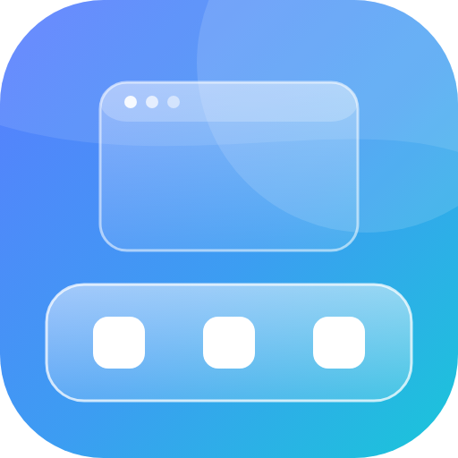
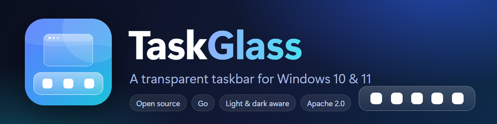

TaskGlassTaskGlass quita el fondo gris de la barra de tareas y también del desplegable de los iconos ocultos. Es gratis, pequeño y se instala en un minuto. TaskGlass removes the grey background of the taskbar and of the hidden-icons flyout. It is free, small and installs in a minute.
Descargar gratisDownload for free
Elige una de las dos opciones. Si no estás seguro, usa el instalador.Pick one of the two options. If you are not sure, use the installer.
Un asistente que lo instala por ti. No necesita permisos de administrador. Se desinstala desde Windows y deja la barra como estaba.A wizard that installs it for you. No administrator rights needed. Uninstall it from Windows and your taskbar goes back to normal.
Descargar instaladorDownload installerUn archivo ZIP: lo descomprimes y lo ejecutas. No instala nada en Windows. Ideal para llevarlo en una carpeta o en un USB.A ZIP file: extract it and run it. Nothing is installed in Windows. Ideal to keep in a folder or on a USB drive.
Descargar portable (ZIP)Download portable (ZIP)Tres pasos, sin conocimientos técnicos.Three steps, no technical knowledge needed.
Documentos\TaskGlass) y abre taskglass.exe. Deja los dos archivos juntos.
Installer: open the downloaded file and click Next. Portable: extract the ZIP to a folder you will keep (for example Documents\TaskGlass) and open taskglass.exe. Keep both files together.Totalmente transparente, también con ventanas maximizadas, o con desenfoque y acrílico si lo prefieres.Fully transparent, also with maximized windows, or blurred and acrylic if you prefer.
El cuadro de iconos ocultos (el botón ^) queda casi transparente, con un poco de fondo para que no se pierdan los iconos.The hidden-icons box (the ^ button) becomes almost transparent, with a little background so icons stay visible.
Sigue el tema de Windows al instante, también el menú de su icono.Follows the Windows theme instantly, including its icon menu.
Casi no usa procesador. Al cerrarlo, o si falla, la barra vuelve a su aspecto normal.Almost no CPU. When you quit it, or if it crashes, the taskbar goes back to normal.
1) Apaga Mostrar el color de énfasis en Inicio y en la barra de tareas (Configuración > Personalización > Colores). 2) Mira que el icono de TaskGlass esté en la bandeja y que Enabled esté marcado. 3) En el menú, comprueba que Fully transparent (Windows 11) esté marcado. 4) Con la versión portable, deja taskglass_tap.dll junto a taskglass.exe.1) Turn off Show accent color on Start and taskbar (Settings > Personalization > Colors). 2) Check that the TaskGlass icon is in the tray and Enabled is ticked. 3) In the menu, check that Fully transparent (Windows 11) is ticked. 4) With the portable version, keep taskglass_tap.dll next to taskglass.exe.
Está junto al reloj. Si no lo ves, pulsa el botón ^ y arrástralo a la barra para tenerlo siempre visible.It is next to the clock. If you do not see it, click the ^ button and drag it onto the bar to keep it always visible.
Para quitar el fondo de la barra de Windows 11, TaskGlass carga una pequeña librería dentro del Explorador de Windows. Algunos antivirus lo marcan por esa técnica. Todo el código es público en GitHub. Si prefieres que no toque el Explorador, desmarca Fully transparent (Windows 11) en su menú (quedará con desenfoque en vez de transparencia total).To remove the Windows 11 taskbar background, TaskGlass loads a small library inside Windows Explorer. Some antivirus programs flag that technique. All the code is public on GitHub. If you prefer it not to touch Explorer, untick Fully transparent (Windows 11) in its menu (you will get blur instead of full transparency).
Clic derecho en el icono > Style para elegir Clear, Blur, Acrylic u Opaque. Para ajustes finos, Open config file abre un archivo de texto; guarda los cambios y se aplican solos.Right-click the icon > Style to pick Clear, Blur, Acrylic or Opaque. For fine tuning, Open config file opens a text file; save your changes and they apply by themselves.
Clic derecho en el icono > marca Start with Windows.Right-click the icon > tick Start with Windows.
Instalador: Configuración > Aplicaciones > TaskGlass > Desinstalar. Portable: clic derecho en el icono > Quit TaskGlass y borra la carpeta. En ambos casos la barra vuelve a la normalidad.Installer: Settings > Apps > TaskGlass > Uninstall. Portable: right-click the icon > Quit TaskGlass and delete the folder. Either way the taskbar goes back to normal.
Pulsa Win+R, escribe taskglass.exe --restore (con la ruta completa si hace falta) y Enter. O reinicia el Explorador de Windows desde el Administrador de tareas.Press Win+R, type taskglass.exe --restore (with the full path if needed) and Enter. Or restart Windows Explorer from Task Manager.
Está probado a fondo en Windows 11 con un monitor. En Windows 10 y con varios monitores debería funcionar pero aún no está verificado. Si algo falla, cuéntalo en GitHub indicando tu versión de Windows.It is thoroughly tested on Windows 11 with one monitor. Windows 10 and multi-monitor setups should work but are not verified yet. If something fails, report it on GitHub with your Windows version.
Guía de configuración completa (en inglés).Full configuration guide.
Arquitectura para quien quiera entenderlo o colaborar (en inglés).Architecture for the curious and contributors.
Historial de cambios de cada versión.Changelog of every version.
Necesitas una cuenta gratuita de GitHub.You need a free GitHub account.